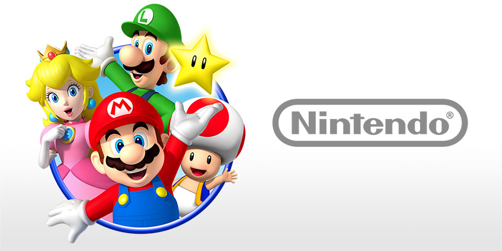
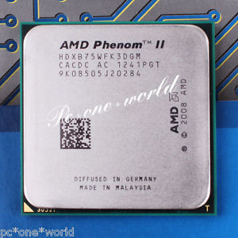
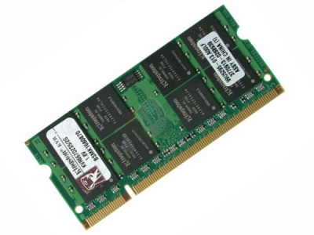
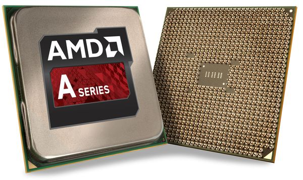
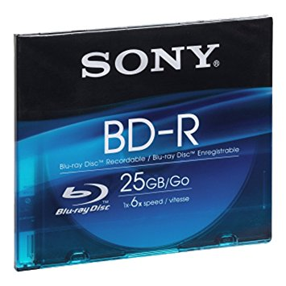
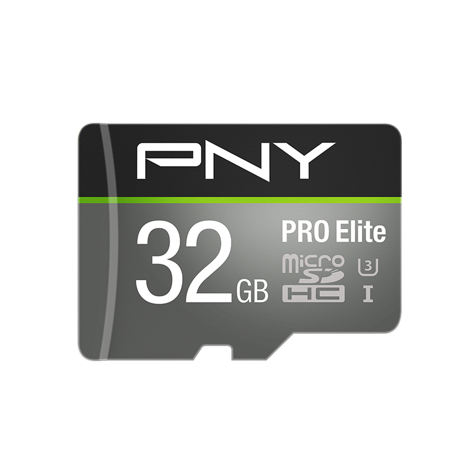

History
The worldwide pioneer in the creation of Nintendo, manufactures and markets hardware and software for its Wii U™ and Wii™ home consoles, Nintendo 3DS and Nintendo DS™ family of portable systems. Since 1983, when it launched the Nintendo Entertainment System, Nintendo has sold more than 4.4 billion video games and more than 696 million hardware units globally, including the current-generation Wii U, Wii, and Nintendo 3DS family of systems, Game Boy, Game Boy Advance, Super NES, Nintendo 64 and Nintendo GameCube systems. It has also created industry icons that have become well-known, household names such as Mario, Donkey Kong, Metroid, Zelda, and Pokémon. A wholly owned subsidiary, Nintendo of Europe, based in Germany, was established in 1990 and serves as headquarters for Nintendo's operations in Europe.
- The Super Mario Franchise
- Animal Crossing
- The Legend of Zelda Franchise
- Tetris
- Kid Icarus
- Yosdhi Island Franchise
- Kirby Adventures
- The Pokemon Franchise
- Xenoblade Chronicles
Games
These are just the few of many games for this console.
- Game Boy was the first game console to be played in space.
- Only one man in the world has the right to call his boat "Donkey Kong."
- Mario and Luigi do not have last names.
- Mario, DK, and Peach were based on characters from Popeye.
- A janitor from the 1960s invented the GameBoy.
- The largest NES games were 768 bytes. In comparison, you can fit two and a half kirby adventure games into one iPhone photo today.
Fun Facts
Components for the Nintendo Wii U
Tri core 3GHz CPU
2GB RAM
AMD GPU
25GB Blu-ray disc
32GB flash memory
 Shell
Shell